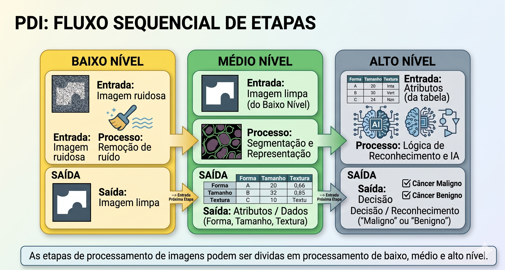
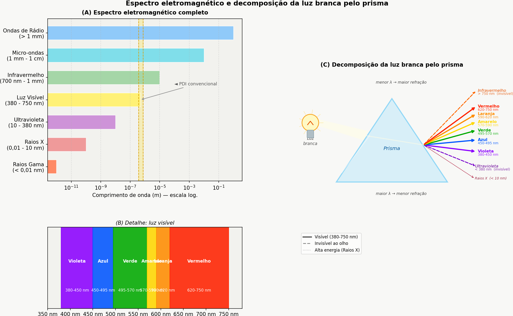
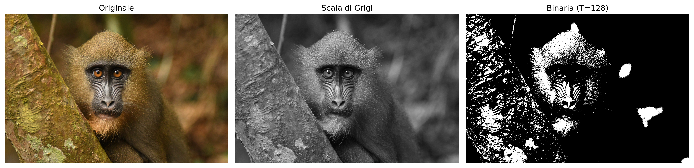
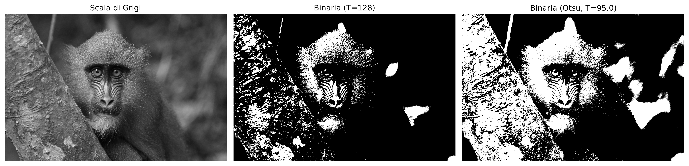
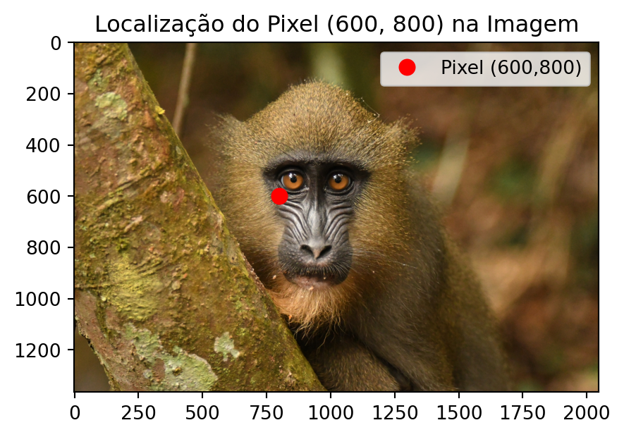

Questo capitolo apre la Parte 1 del libro, dedicata ai fondamenti dell’Elaborazione Digitale delle Immagini (EDI). Vengono presentati la rappresentazione matematica delle immagini digitali e i principali metodi per la loro manipolazione.
Si utilizza il linguaggio Python e la libreria morph.py (ZAMPIROLLI, 2025).
1.1 Obiettivi
Al termine di questo capitolo, sarai in grado di:
Comprendere la natura fisica e matematica dell’immagine digitale \(f(x,y)\).
Identificare le bande dello spettro elettromagnetico rilevanti per l’elaborazione digitale delle immagini (PDI).
Eseguire operazioni di base: lettura, visualizzazione e salvataggio delle immagini.
Accedere e modificare le intensità dei pixel singolarmente.
Applicare la sogliatura manuale.
Configurare l’ambiente di sviluppo in Python.
Gestire strutture di array (NumPy) senza incorrere in trappole di memoria.
1.2 Prima di iniziare: Notebooks interattivi
Questo materiale è stato realizzato secondo il concetto di Literate Programming (Programmazione Letteraria), ideato da Donald Knuth negli anni ’80 (KNUTH, 1984). Knuth — anche creatore del sistema TeX per la tipografia digitale — propose che i programmi fossero scritti come una narrazione logica per gli esseri umani, alternando codice e documentazione.
Per eseguire una cella, premere Shift + Invio oppure fare clic sul pulsante ▶️.
NotaNota sul formato
Nelle versioni renderizzate (PDF o HTML), il codice è presentato in blocchi statici a scopo di lettura e riferimento. L’esecuzione interattiva richiede l’accesso tramite Google Colab (disponibile in cima alla pagina) o in ambiente locale con VSCode o Jupyter Notebook.
1.3 Fondamenti
Lo studio dei sistemi basati su immagini comprende un ecosistema di discipline integrate che trasformano dati visivi grezzi in conoscenza strutturata. Mentre alcune aree si concentrano sulla generazione di rappresentazioni, altre si dedicano al trattamento e all’analisi di tali dati per supportare applicazioni tecnologiche complesse.
Il diagramma presentato in Figura 1.1 stabilisce la distinzione e la complementarità tra l’Elaborazione Digitale delle Immagini (EDI) e la Visione Artificiale (VA). L’EDI, evidenziata in verde, si concentra sulla trasformazione da immagine a immagine, mirando al miglioramento della qualità o alla pre-elaborazione, come la rimozione del rumore e l’accentuazione del contrasto.
Al contrario, la VA, contrassegnata in blu, si concentra sull’interpretazione del contenuto visivo per estrarre modelli o informazioni, come il riconoscimento di oggetti e gesti. La regione di intersezione illustra la sinergia tra le aree, dove l’EDI prepara i dati visivi per l’interpretazione da parte della VA. La mappa dimostra inoltre le interconnessioni di entrambe le discipline con aree quali la Robotica, la Grafica Computerizzata, l’Intelligenza Artificiale (IA) e le Neuroscienze.
Figura 1.1: Diagramma relazionale che illustra le distinzioni fondamentali, le sinergie e le interconnessioni tra EDI e VA nel contesto dei sistemi basati su immagini.
1.3.1 👁️ Visione Computazionale
Focus:Immagine → Modello (percorso inverso rispetto alla Computer Grafica).
Obiettivo: Estrarre informazioni di alto livello da immagini o video.
Applicazioni tipiche:
Robotica: rilevamento di ostacoli, localizzazione e navigazione autonoma.
Sorveglianza e ispezione: riconoscimento di eventi, lettura di targhe, controllo qualità.
Telerilevamento: analisi di immagini satellitari, mappatura ambientale.
Imaging medico: rilevamento di tumori, segmentazione di organi, supporto alla diagnosi.
Interazione uomo-computer: riconoscimento di gesti, espressioni facciali, eye tracking.
Relazione con altri ambiti: utilizza tecniche di Apprendimento Automatico e IA per classificare e interpretare le scene; funge da “occhi” della Robotica.
1.3.2 🖼️ Elaborazione Digitale delle Immagini (PDI)
Obiettivo:Immagine → Immagine (generalmente - trasformazione di un’immagine in un’altra).
Scopo: Migliorare la qualità visiva o estrarre caratteristiche di basso livello.
Applicazioni comuni:
Rimozione del rumore (filtri media, mediana, gaussiano).
Miglioramento del contrasto (equalizzazione dell’istogramma, regolazione gamma).
Rilevamento dei bordi (Sobel, Canny, Laplaciano).
Segmentazione (sogliatura, crescita delle regioni, watershed).
È la base per la maggior parte dei sistemi di visione artificiale (pre-elaborazione).
La Computer Grafica applica spesso PDI per la post-elaborazione (es.: smussatura, miglioramento).
Le tecniche di IA possono ottimizzare i parametri di elaborazione (es.: apprendimento di filtri).
Tabella 1.1: Connessione tra PDI, VC e altre aree della scienza.
Área
Relação com PDI e VC
Intelligenza Artificiale
Fornisce modelli (reti neurali, SVM) che interpretano le uscite della VC.
Robotica
Consuma dati di VC per prendere decisioni (navigazione, manipolazione).
Apprendimento Automatico
Utilizza descrittori estratti da PDI/VC per addestrare classificatori.
Computer Grafica
Percorso inverso: modello → immagine; spesso applica PDI per una resa realistica.
Neuroscienze
Ispira modelli di PDI (es.: filtri simili alle cellule gangliari della retina).
1.4 Fasi del PDI
Le fasi del PDI sono presentate nella Figura 1.2 e possono essere interpretate come una catena di trasformazioni che riduce la ridondanza dei dati per ricercarne il significato:
Basso Livello: opera direttamente sui pixel dell’immagine disturbata per apportare miglioramenti e filtraggi, producendo come output un’immagine pulita o esaltata.
Medio Livello: riceve l’immagine trattata ed esegue la segmentazione e la descrizione, trasformando la matrice dei pixel in attributi strutturati (forma, dimensione e texture).
Alto Livello: utilizza la tabella degli attributi per alimentare processi di logica e intelligenza artificiale, portando alla decisione o al riconoscimento finale (come la diagnosi medica).

Figura 1.2: Rappresentazione del flusso sequenziale di elaborazione: l’output di ciascun livello diventa l’input del livello successivo.
La Figura 1.3 descrive l’intera sequenza dell’elaborazione delle immagini digitali (PDI), dall’acquisizione all’interpretazione. Il flusso inizia con l’Acquisizione dell’Immagine (1) e prosegue con il Miglioramento (2) e il Restauro (3). Successivamente, il contenuto viene isolato tramite la Segmentazione (4) e raffinato mediante la Morfologia (5). La transizione cruciale avviene nella Rappresentazione e Descrizione (6), dove gli oggetti visivi vengono convertiti in dati matematici (area, perimetro, ecc.), consentendo il Riconoscimento (7). I processi ausiliari includono l’Elaborazione dell’Immagine a Colori e la Compressione, che contribuiscono all’efficienza dell’archiviazione e dell’analisi.
Figura 1.3: Flusso dettagliato del PDI: dall’acquisizione sensoriale all’estrazione di attributi e al riconoscimento automatizzato, includendo l’elaborazione a colori e la compressione.
1.5 Formazione dell’Immagine e Spettro
Il processo di formazione di un’immagine si basa sull’interazione tra materia ed energia radiante. Essenzialmente, un’immagine viene concepita quando un sensore registra la radiazione risultante dall’interazione con un oggetto fisico. Nel contesto della visione umana e della fotografia convenzionale, questo fenomeno dipende da una sorgente luminosa che illumina la scena; le caratteristiche degli oggetti vengono quindi codificate attraverso le variazioni di intensità e colore della luce che raggiunge il sensore, come illustrato nella Figura 1.4.
Figura 1.4: Rappresentazione dello spettro visibile e della sua posizione rispetto alle altre radiazioni elettromagnetiche, evidenziando la variazione delle lunghezze d’onda da 380 nm a 750 nm.
La luce visibile occupa solo una piccola banda dello spettro elettromagnetico — tra 380 nm (viola) e 750 nm (rosso) — come illustrato nella Figura 1.5. I sensori digitali convenzionali operano in questa stessa finestra, ma apparecchiature specializzate possono captare radiazioni invisibili all’occhio umano, come l’infrarosso e i raggi X. In PDI, l’immagine formata dipende direttamente dalla sensibilità spettrale del sensore utilizzato.

Figura 1.5: (A) Spettro elettromagnetico completo in scala logaritmica, con evidenza della fascia visibile. (B) Dettaglio della luce visibile (380-750 nm) e dei suoi colori. (C) Scomposizione della luce bianca tramite prisma: la lunghezza d’onda minore subisce una rifrazione maggiore, separando UV, visibile e infrarosso.
A partire da questo processo fisico di acquisizione, diventa possibile modellare matematicamente l’immagine digitale come una funzione bidimensionale discreta, nella quale ogni punto della scena è rappresentato da campioni numerici di intensità luminosa, formalizzando così i concetti di pixel e di immagine digitale presentati nella sezione successiva.
1.6 Cos’è un’Immagine Digitale?
Un’immagine digitale è formata da una griglia di pixel (Picture Elements), dove ogni pixel è la più piccola unità elementare dell’immagine.
ConsiglioCos’è un Pixel?
Un pixel è la più piccola unità indirizzabile che compone un’immagine digitale. Ogni pixel occupa una posizione unica nella griglia e memorizza uno o più valori numerici che rappresentano la sua intensità o colore.
Rappresentazione Matematica
A differenza di una funzione continua, il dominio di un’immagine digitale è un piano rettangolare finito \(\mathbb{E} \subset \mathbb{Z}^2\), che rappresenta la griglia di campionamento. Questo dominio è indicizzato da coordinate intere:
\[
\mathbb{E} = \{ (x, y) \in \mathbb{Z}^2 \mid 0 \le x < L,\; 0 \le y < H \}
\tag{1.1}\]
Dove:
\(L\): rappresenta la larghezza dell’immagine (numero di colonne).
\(H\): rappresenta l’altezza dell’immagine (numero di righe).
L’immagine digitale è una funzione che associa a ogni coppia di coordinate \((x,y)\) uno o più valori che descrivono l’aspetto del pixel.
\[
f: \mathbb{E} \to \mathcal{V}
\tag{1.2}\]
L’insieme \(\mathcal{V}\) definisce i valori possibili per il pixel (codominio), variando a seconda del tipo di immagine, come dimostrato nella Tabella 1.2.
Tabella 1.2: Principali tipi di immagine digitale e i rispettivi insiemi di valori possibili per ogni pixel.
Tipo di immagine
\(\mathcal{V}\) (valori del pixel)
Rappresentazione
Binaria
\(\{0, 1\}\) o \(\{0, 255\}\)
⬛◻️
Scala di grigi
\(\{0, 1, \dots, 255\}\)
░▒▓█
A colori (RGB)
\(\{0, \dots, 255\}^3\) (terne ordinate di valori)
🟥🟩🟦
Esempio pratico: Un’immagine a colori nel modello RGB può essere rappresentata matematicamente da una funzione che associa tre valori di intensità a ogni pixel. Computazionalmente, questa rappresentazione corrisponde a tre matrici sovrapposte — i canali rosso (Red), verde (Green) e blu (Blue) — nelle quali ogni elemento memorizza l’intensità luminosa del rispettivo canale in una determinata posizione dell’immagine.
Per rendere possibili gli esperimenti pratici di PDI e VC, questo libro utilizza l’ecosistema scientifico di Python, integrando librerie orientate alla manipolazione matriciale, all’elaborazione delle immagini e alla visualizzazione dei risultati, presentate di seguito.
1.7 Configurazione dell’Ambiente
Questo materiale utilizza l’ecosistema scientifico di Python, con particolare attenzione a NumPy (calcolo matriciale), OpenCV (visione computazionale) e alla libreria morph.py (ZAMPIROLLI, 2025), sviluppata per scopi didattici e utilizzata lungo tutto questo libro, come presentato nella Tabella 1.3.
Il progetto è attualmente disponibile in Python e Portoghese. La sua organizzazione, tuttavia, consente l’espansione ad altri linguaggi di programmazione e idiomi.
Gli Esercizi di Programmazione (EP) presentati alla fine dei capitoli possono essere validati dal modulo testsuite.py, che consente di eseguire casi di test in diversi linguaggi, tra cui Python, C, C++, Java, JavaScript e R. In questo modo, gli stessi casi di test possono essere utilizzati per verificare le soluzioni sviluppate nei notebook e nel Moodle/VPL.
Tabella 1.3: Principali librerie e moduli utilizzati in questo libro per il calcolo matriciale, PDI, VC, visualizzazione e validazione degli esercizi.
Libreria
Funzione principale
numpy
Rappresentazione matriciale e operazioni numeriche
opencv-python
Lettura, scrittura e operazioni di visione computazionale
matplotlib
Visualizzazione di immagini e grafici
morph.py
Astrazione didattica delle operazioni di PDI
testsuite.py
Esecuzione e validazione automatica degli EP
1.8 Versioni di morph.py
La libreria morph.py ha due versioni pubbliche:
Versione 1.0 — versione originale, pubblicata insieme all’articolo presentato all’EduComp 2024: repository della versione 1.0
La versione 1.1 è stata adattata per soddisfare anche i vincoli di memoria del Moodle/VPL (Laboratorio Virtuale di Programmazione). Nella versione 1.0, alcune librerie, come matplotlib, requests e skimage, venivano caricate al momento dell’import morph. In ambienti con risorse limitate, questo caricamento poteva superare il limite di memoria e produrre errori come Jail: out of memory, 128MiB.
Nella versione 1.1, questi import sono stati sostituiti da caricamento lazy: ogni libreria viene importata solo dal metodo che effettivamente la utilizza. Così, il comando import morph mantiene il caricamento iniziale ridotto, utilizzando principalmente numpy e cv2, mentre le risorse aggiuntive vengono caricate su richiesta.
La configurazione dei notebook è centralizzata nel file config.py, disponibile nello stesso repository. Questo file verifica le dipendenze, cerca di garantire l’uso di OpenCV 5.0 e mette a disposizione morph.py e, quando necessario, testsuite.py. Quando l’ambiente non dispone della versione adeguata di OpenCV, config.py può reinstallare la versione richiesta e, se necessario, richiedere il riavvio dell’ambiente di esecuzione.
In questo modo, i notebook utilizzano un’unica routine di configurazione, riducendo la ripetizione di codice e facilitando la riproduzione dell’ambiente computazionale utilizzato in questo libro.
1.9 Fondamenti di Matrici — attenzione alla copia di riferimenti
Poiché un’immagine digitale può essere rappresentata da una matrice, è importante comprendere come creare e manipolare correttamente le matrici. In Python, esiste una trappola comune nell’utilizzo dell’operatore * con le liste:
AvvisoAttenzione alla copia di riferimenti
Eseguendo m = [[0]*2]*3, non vengono create tre righe indipendenti. Vengono invece create tre riferimenti alla stessa lista. Di conseguenza, la modifica di un elemento in una delle righe modificherà anche l’elemento corrispondente nelle altre righe.
Per visualizzare questo comportamento, si può eseguire il codice su Python Tutor e confrontarlo con il metodo corretto per creare una matrice utilizzando le liste: m = [[0]*2 for _ in range(3)].
In pratica, per l’elaborazione digitale delle immagini (EDI), si raccomanda di utilizzare NumPy, che fornisce strutture dati multidimensionali efficienti e operazioni vettorizzate adatte alla manipolazione delle immagini. Il codice seguente presenta diversi modi di creare immagini sintetiche, i cui risultati sono mostrati nella Figura 1.6.
import numpy as np# Creando un'immagine nera (zeri) di 4, 6 pixelimg_preta = np.zeros((4, 6), dtype='uint8')img_preta[0,0] =255# pixel bianco nell'angolo in alto a sinistra# Creando un'immagine bianca (255) di 4, 6 pixelimg_branca = np.ones((4, 6), dtype='uint8') *255img_branca[3,5] =0# pixel nero nell'angolo in basso a destra# Creando un'immagine casuale per test (rumore)img_random = mm.randomImage(4, 6, maxValue=255)print("Matrice casuale generata:")print(mm.drawImg(img_random))mm.show( [img_preta, img_branca, img_random], titles=["Prevalentemente nera\n(con 1 pixel bianco in (0,0))","Prevalentemente bianca\n(con 1 pixel nero in (3,5))","Immagine casuale\n(simulazione di rumore)" ], cols=3, figsize=(9, 3), axis=True)
Figura 1.6: Esempi di immagini sintetiche rappresentate matricialmente.
1.10 Lettura e Visualizzazione delle Immagini
Nelle librerie come NumPy, OpenCV e scikit-image, le immagini digitali sono spesso rappresentate computazionalmente come array di NumPy. In questo modo, operazioni matriciali e concetti di algebra lineare possono essere applicati direttamente all’elaborazione digitale delle immagini (EDI).
Una delle operazioni fondamentali nell’elaborazione delle immagini digitali è la lettura delle immagini.
Nella libreria morph.py, la funzione mm.read() consente di caricare immagini sia da file locali che da URL, come illustrato nella Figura 2.7..
Dimensioni (H, W, Canali): (1365, 2048, 3)
Tipo di dato: uint8
Figura 1.7: Mandrill (Mandrillus sphinx) in ambiente naturale. Credito: Julien Renoult (CC BY 4.0).
Alternativa: Download dell’Immagine in Archiviazione Locale
In ambienti in cui la lettura diretta degli URL non è disponibile — a causa di restrizioni di rete, policy di firewall o assenza di connettività — un’alternativa consiste nell’eseguire preventivamente il download dell’immagine sul file system locale. Dopo l’archiviazione, l’immagine può essere caricata normalmente tramite la funzione mm.read(). Nell’esempio seguente, il file viene salvato localmente con il nome mandrill.png.
wget -O mandrill.png <URL> esegue il download dell’immagine e la archivia localmente con il nome specificato;
mm.read('mandrill.png') effettua la lettura del file direttamente dal file system, senza la necessità di ulteriori richieste HTTP;
questa strategia riduce la dipendenza dalla connettività durante l’esecuzione degli esperimenti ed evita download ripetuti della stessa immagine.
ConsiglioNota
Il prefisso ! viene utilizzato in ambienti basati su notebook, come Jupyter Notebook, JupyterLab e Google Colab, per eseguire comandi del sistema operativo direttamente in celle di codice. Su terminali convenzionali, il comando deve essere utilizzato senza il prefisso !.
Qualora l’utilità wget non sia installata, si può utilizzare in alternativa:
Come abbiamo visto, un’immagine a colori nello spazio RGB è rappresentata dalla funzione:
\[
f: \mathbb{E} \to \{0,1,\dots,255\}^3
\]
Cioè, per ogni pixel \((x,y)\), abbiamo tre valori \((R,G,B)\) che ne definiscono il colore.
Conversione in Scala di Grigi
Per convertire un’immagine RGB in scala di grigi (grayscale), è necessario combinare i tre canali in un unico valore di intensità \(g\), che rappresenta la luminosità percepita. Poiché l’occhio umano non è ugualmente sensibile al rosso, al verde e al blu, si utilizza una media ponderata. Lo standard ITU-R BT.601 ({ITU-R}, 2011) definisce i seguenti pesi:
\[
g = 0.299\,R + 0.587\,G + 0.114\,B
\tag{1.3}\]
Dopo il calcolo, il valore \(g\) viene arrotondato all’intero più vicino e adattato all’intervallo \([0, 255]\). Il risultato è una nuova immagine, ora in scala di grigi, rappresentata da:
A partire dall’immagine in scala di grigi \(f_{\text{grigi}}(x,y)\), un’operazione fondamentale è la soglia, che produce un’immagine binaria (solo bianco e nero). A tale scopo, si sceglie un valore di taglio \(T\) (generalmente nell’intervallo \([0,255]\)) e si definisce:
Esempio: Con \(T = 128\), i pixel con intensità superiore a 128 diventano bianchi (255); gli altri diventano neri (0).
La soglia è ampiamente utilizzata per segmentare gli oggetti dallo sfondo, estrarre i bordi o creare maschere binarie per l’elaborazione successiva.
Nota: Il valore 255 rappresenta il bianco massimo nelle immagini a 8 bit, mentre 0 rappresenta il nero assoluto.
Esempio pratico di conversione e soglia
La Figura 1.8 illustra i passaggi principali per trasformare un’immagine a colori in scala di grigi e, successivamente, convertirla in un’immagine binaria mediante soglia. Il codice seguente implementa questi passaggi:
# 1. Converti in Scala di Grigiimg_gray = mm.gray(img)# 2. Applica soglia (Pixel > 128 diventano 255, altri 0)limiar =128img_binaria = mm.threshold(img_gray, limiar)# Uso della nuova funzionemm.show( [img, img_gray, img_binaria], titles=["Originale", "Scala di Grigi", f"Binaria (T={limiar})"], cols=3)

Figura 1.8: Elaborazione base delle immagini: (a) immagine originale, (b) immagine in scala di grigi, (c) immagine binarizzata con soglia (T=128).
1.12 Limiarizzazione con il metodo di Otsu
Come presentato in Equazione 1.4, la limiarizzazione converte un’immagine in toni di grigio in un’immagine binaria utilizzando un valore di soglia \(T\). Finora abbiamo fissato manualmente \(T = 128\).
img_bin_fixo = mm.threshold(img_gray, T=128)
Tuttavia, la scelta manuale di \(T\) non è sempre banale. La libreria mm offre un’alternativa automatica: quando il parametro limiarnon viene fornito, la funzione mm.threshold(img_gray) calcola il valore di \(T\) mediante il metodo di Otsu (OTSU, 1979). Questo metodo, che verrà dettagliato nei capitoli successivi, massimizza la varianza tra le classi dell’istogramma (frequenza di ciascun tono di grigio), separando automaticamente i pixel dell’oggetto e dello sfondo.
Il codice seguente confronta la limiarizzazione manuale (\(T=128\)) con quella automatica (Otsu), mostrando anche il valore di \(T\) calcolato:
import cv2# Sogliatura con T fisso (manuale)T_fixo =128img_bin_fixo = mm.threshold(img_gray, T_fixo)# Sogliatura con il metodo di Otsu (T automatico)T_otsu, img_bin_otsu = cv2.threshold(img_gray, 0, 255, cv2.THRESH_BINARY + cv2.THRESH_OTSU)print(f'Soglia calcolata da Otsu: T = {T_otsu}')# o semplicemente:# img_bin_otsu = mm.threshold(img_gray)# Visualizzazione affiancatamm.show( [img_gray, img_bin_fixo, img_bin_otsu], titles=["Scala di Grigi", f"Binaria (T={T_fixo})", f"Binaria (Otsu, T={T_otsu})"], cols=3)
Soglia calcolata da Otsu: T = 95.0

Figura 1.9: Confronto tra sogliatura manuale (T=128) e automatica (Otsu) sull’immagine in scala di grigi.
La Figura 1.9 mostra che la soglia ottenuta mediante Otsu si adatta automaticamente all’immagine, producendo una binarizzazione più efficace rispetto a un valore fisso, soprattutto quando le intensità dell’oggetto e dello sfondo sono ben separate nell’istogramma. Questa tecnica è ampiamente utilizzata nei sistemi di visione artificiale (VC) per la binarizzazione di documenti, il rilevamento di oggetti e il pre-processing delle immagini.
la libreria mm astrae tutta questa complessità: basta chiamare mm.threshold(img_gray). La soglia di Otsu viene calcolata automaticamente e l’immagine binaria viene restituita direttamente. Questo approccio consente di concentrarsi sul concetto, non sui dettagli implementativi.
1.13 Accesso ai Pixel
In Python con NumPy, un’immagine è strutturata come un array multidimensionale. L’accesso a un pixel specifico utilizza la convenzione matriciale riga (asse Y) e colonna (asse X): img[riga, colonna].
Il codice della Figura 1.10 dimostra come estrarre questi valori in immagini a colori (RGB) e in scala di grigi, oltre a isolare l’intorno immediato del punto di interesse.
import matplotlib.pyplot as plt# 1. Definizione delle coordinate del pixel targetr, c =600, 800# 2. Accesso diretto ai valori dei pixelpixel_cinza = img_gray[r, c]pixel_rgb = img[r, c]print(f"📌 VALORI NEL PIXEL TARGET ({r}, {c}):")print(f" • Toni di grigio (Scalare) : {pixel_cinza}")print(f" • Colorato (Vettore RGB) : R={pixel_rgb[0]}, G={pixel_rgb[1]}, B={pixel_rgb[2]}")print("-"*50)# 3. Visualizzazione didattica dell'intorno 3x3 attorno al pixel (r, c)# Ritaglia dalla riga r-1 alla r+1, e dalla colonna c-1 alla c+1vizinhanca_gray = img_gray[r-1:r+2, c-1:c+2]print(f"🔍 MATRICE DELL'INTORNO 3x3 IN TONI DI GRIGIO:")print(f" (Il pixel target centrale è evidenziato con tra parentesi quadre)\n")# Stampa formattata per evidenziare il pixel centralefor i, linha inenumerate(vizinhanca_gray): linhas_str = []for j, valor inenumerate(linha):if i ==1and j ==1: linhas_str.append(f"[{valor:3d}]") # Evidenzia il centro (100, 100)else: linhas_str.append(f" {valor:3d} ")print(" "+" ".join(linhas_str))# 4. Dimostrazione visiva usando il mm.show (opzionale, ma eccellente per il libro)# Mostra l'immagine intera con un punto che delimita la regioneplt.figure(figsize=(5, 5))plt.imshow(img)plt.plot(c, r, 'ro', markersize=8, label=f'Pixel ({r},{c})') # Traccia (x, y) -> (c, r)plt.title(f"Localização do Pixel ({r}, {c}) na Imagem")plt.legend()plt.axis('on') # Mantiene gli assi per lo studente per vedere le coordinate 100, 100plt.show()
📌 VALORI NEL PIXEL TARGET (600, 800):
• Toni di grigio (Scalare) : 81
• Colorato (Vettore RGB) : R=92, G=78, B=67
--------------------------------------------------
🔍 MATRICE DELL'INTORNO 3x3 IN TONI DI GRIGIO:
(Il pixel target centrale è evidenziato con tra parentesi quadre)
83 96 105
85 [ 81] 96
83 77 84

Figura 1.10: Accesso a un pixel specifico (r, c) e la rappresentazione del suo intorno nell’immagine.
Spiegazione riga per riga:
img_gray[r, c] — Restituisce un singolo valore intero (scalare) compreso tra 0 e 255, che rappresenta l’intensità di luminosità del grigio.
img[r, c] — Restituisce un vettore con tre valori [R, G, B], corrispondenti alle intensità dei canali Rosso, Verde e Blu.
img_gray[r-1:r+2, c-1:c+2] — Esegue un’affettatura (slicing) per estrarre la sottomatrice \(3\times 3\) attorno al pixel. Questa operazione è alla base per l’implementazione di filtri spaziali e convoluzioni.
Il ciclo for successivo formatta semplicemente tale sottomatrice nella console, mostrando il pixel centrale tra parentesi quadre [ ] a scopo didattico.
La funzione plt.plot(c, r, 'ro') traccia un punto rosso sull’immagine per correlare la coordinata numerica con la sua posizione visiva. Si noti che Matplotlib utilizza l’ordine predefinito dello schermo (X, Y), invertendolo in (c, r).
Poiché l’indicizzazione in Python inizia da zero (zero-based), l’angolo superiore sinistro dell’immagine è la coordinata (0,0). Ricorda sempre questa regola: la prima dimensione della matrice controlla l’altezza (righe/Y) e la seconda controlla lalarghezza (colonne/X).
1.14 Riassunto
In questo capitolo sono stati presentati i fondamenti della rappresentazione delle immagini digitali: la definizione di pixel, la strutturazione delle immagini in matrici e l’impatto del campionamento e della quantizzazione sulla qualità finale:
Immagine digitale = funzione \(f(x,y)\) che mappa coordinate in intensità (scalari o vettoriali).
Dominio: insieme finito \(\mathbb{E} = \{(x,y) \in \mathbb{Z}^2 \mid 0 \le x < L,\; 0 \le y < H\}\).
Tipi principali: binaria (\(\mathcal{V} = \{0, 255\}\)), toni di grigio (\(\mathcal{V} = [0,255]\)) e RGB (\(\mathcal{V} = [0,255]^3\)).
Sogliatura converte i toni di grigio in immagine binaria; il metodo di Otsu determina automaticamente il valore di soglia massimizzando la varianza tra le classi.
La libreria morph.py (o mm) offre funzioni didattiche per operazioni di base dell’elaborazione delle immagini, come mm.gray(), mm.threshold(), mm.show_multiple().
Insidia NumPy: non usare mai [[0]*n]*m per creare matrici — usa sempre np.zeros() o np.ones().
Accesso ai pixel tramite img[riga, colonna], con indicizzazione zero-based.
Il Capitolo 2 tratterà istogrammi ed equalizzazione del contrasto.
1.15 🤖 Uso del Gemini Notebook come Tutor Complementare
In questa edizione, oltre ai notebook interattivi su Google Colab, il Gemini Notebook è disponibile come strumento complementare di studio. La piattaforma utilizza esclusivamente i documenti forniti dall’autore come base di conoscenza, garantendo risposte coerenti con il contenuto del libro.
Importante🎓 Studia con il Tutor Intelligente
Accedi all’ambiente del capitolo tramite il link qui sotto ed esplora in particolare le opzioni Guida allo Studio e Conversazione per approfondire la tua comprensione.
Il progetto di questo capitolo nel Gemini Notebook è stato costruito esclusivamente con il testo in portoghese e gli esempi di codice in Python. Se stai studiando dall’edizione in inglese o francese, oppure seguendo il percorso in C++, le risposte del tutor potrebbero non corrispondere esattamente alla versione che stai leggendo.
⚠️ Avvertenza sul Contenuto Generato dall’IA
L’IA è un potente alleato nello studio, ma il contenuto generato può contenere errori o imprecisioni. Consulta sempre libri, articoli scientifici e altre fonti accademiche affidabili per validare le informazioni. Quando possibile, esegui gli esempi pratici forniti in questo capitolo per verificare i risultati.
Funzionalità Disponibili sulla Piattaforma
Il Gemini Notebook offre una suite avanzata di strumenti basati sull’IA per trasformare il contenuto statico del libro in un’esperienza di apprendimento dinamica e multimediale. La piattaforma utilizza tecniche di RAG (Retrieval-Augmented Generation), fondate sul lavoro di Lewis (2020), per basare le risposte strettamente sui documenti forniti e minimizzare il verificarsi di allucinazioni.
Le principali funzionalità includono:
Sintesi Multimodali (Audio e Video): Generazione di conversazioni naturali tra esperti nel formato di Sintesi Audio (stile podcast) e Sintesi Video, che discutono i temi centrali del capitolo, come le differenze tra PDI e VC, o l’interpretazione di trasformazioni come la sogliatura e il metodo di Otsu.
Visualizzazione di Strutture (Mappa Mentale e Infografica): Creazione automatica di diagrammi che collegano visivamente i concetti, ad esempio, il flusso di elaborazione dalla cattura dell’immagine digitale, passando per la conversione in toni di grigio, la sogliatura e la segmentazione binaria.
Strumenti di Valutazione (Test e Schede Didattiche): Generazione di Test a scelta multipla e Schede Didattiche (flashcards) per il consolidamento delle conoscenze, basati sul testo d’autore (es.: domande sulla formula di conversione RGB→grigio o sul funzionamento della soglia globale e di Otsu).
Supporto alla Presentazione (Slide e Relazioni): Assistenza nella strutturazione di Presentazioni di Slide e nella redazione di Relazioni tecniche, facilitando la comunicazione dei risultati di esperimenti con le immagini.
Analisi dei Dati (Tabella Dati): Organizzazione dei dati estratti dal testo in tabelle strutturate, aiutando la comprensione di esempi pratici, come il confronto tra diversi valori di soglia.
Chat Contestualizzata: Consente di porre domande dirette sul codice e sulla teoria, come: “Come implementare la conversione da RGB a toni di grigio utilizzando i pesi dello standard ITU‑R BT.601?” o “Cosa succede all’immagine binaria se scelgo una soglia T=200 invece di T=128?”.
1.16 Elenco di Esercizi
(15%) Con le tue parole, definisci immagine digitale e pixel. Fornisci un esempio concreto di come un’immagine a colori (RGB) è rappresentata in forma matriciale nel computer.
(15%) Spiega le differenze tra immagine binaria, toni di grigio (8 bit) e a colori RGB, indicando l’intervallo di valori possibili per ogni pixel in ciascun tipo.
(20%) Considerando la formula di conversione RGB → toni di grigio dello standard ITU‑R BT.601: \[g = 0.299\,R + 0.587\,G + 0.114\,B\] Calcola il valore del pixel in toni di grigio per \((R,G,B) = (80, 180, 30)\). Arrotonda al numero intero più vicino.
(20%) Che cos’è la sogliatura (thresholding)? Spiega la differenza tra scegliere una soglia \(T\) fissa (es.: \(T=128\)) e utilizzare il metodo di Otsu per la determinazione automatica della soglia. In poche parole, come sceglie la soglia il metodo di Otsu?
(15%) Nel contesto della libreria didattica mm discussa nel capitolo, rispondere:
(7,5%) Come si accede al valore del pixel nella posizione (riga=50, colonna=60) di un’immagine in scala di grigi img_gray?
(7,5%) Qual è il vantaggio di usare mm.threshold(img_gray) senza passare la soglia? Confrontare con la chiamata equivalente in OpenCV.
(15%) Cosa restituisce la proprietà img.shape per un’immagine NumPy in formato RGB? Fornire un esempio concreto con un’immagine di 640×480 pixel.
Riferimenti del Capitolo
La base teorica di questo capitolo comprende le seguenti opere di PDI e VC:
Gonzalez (2018) per i fondamenti di Elaborazione Digitale delle Immagini (EDI).
Singh (2019) per l’implementazione pratica di metodi di elaborazione e analisi delle immagini.
Szeliski (2022) per lo studio di VC e algoritmi fondamentali.
Bradski (2008) per l’applicazione della libreria OpenCV in ambiente Python.
Lewis (2020) per il concetto di generazione aumentata da recupero (RAG), utilizzato a supporto dell’elaborazione delle informazioni di questo materiale.
1.17 💻 Parte pratica con esercizi di programmazione
🎯 Obiettivo di questo Quaderno
Gli Esercizi di Programmazione (EPs) presentati di seguito possono essere sottomessi anche in attività Moodle (attività VPL) che forniscono feedback automatico.
Questo quaderno è stato sviluppato per superare le limitazioni d’uso di Moodle. Con esso, si deve:
Sviluppare: Scrivere e modificare la propria soluzione direttamente nell’ambiente Colab.
Validare: Testare il proprio codice localmente utilizzando gli stessi casi di test di Moodle.
Organizzare: Salvare in modo sicuro i propri codici delle attività VPL.
Valutare: Quando si è connessi a Moodle, basta copiare la propria soluzione e cliccare su Valuta in Moodle (se si è nella rete UFABC) per registrare il proprio voto ufficiale.
⚙️ Istruzioni Passo a Passo
In un ambiente di esecuzione (come VSCode, Jupyter o Colab), seguire l’ordine seguente per configurare l’ambiente e validare i propri esercizi:
Preparazione dell’Ambiente
Eseguire la cella di codice seguente per scaricare morph.py e testsuite.py dal repository della disciplina — solo se non sono già presenti nella directory locale. Con entrambi in ./, il notebook e i sottoprocessi del TestSuite trovano il modulo senza configurazioni aggiuntive di percorso.
Nota: Lo script testsuite.py cercherà automaticamente i casi di test in all/{cap}/cases su GitHub.
Scrittura del Codice
Salvare la propria soluzione in una cella di codice utilizzando il comando magico %%writefile. Il nome del file deve seguire il pattern EPX_Y.*, dove X è il capitolo, Y è l’esercizio e * è l’estensione del linguaggio.
Esempio:%%writefile EP01_01.py
Download
Scaricare morph.py e testsuite.py eseguendo la cella seguente:
Dopo aver salvato il file con la tua soluzione, esegui il comando seguente (in una nuova cella) per valutare i test automatici:
TestSuite("EP01_01.extensão").run()
Sostituisci l’estensione in base al linguaggio utilizzato:
Linguaggio
Estensione
Python
.py
Java
.java
C
.c
C++
.cpp
JavaScript
.js
R
.r
Come funziona: Il TestSuite scarica i casi di test da GitHub, esegue il tuo programma con ciascun input e confronta l’output con quello atteso – calcolando automaticamente il tuo voto.
Per testare codice Python direttamente, senza salvare file, usa run_code(codice) passando il codice come stringa in una variabile codice:
codice ="""from morph import mm# ... il tuo codice qui ..."""TestSuite("EP04_01").run_code(codice)
⚠️ Importante: Regole e Buone Pratiche
🔹 Sull’Inserimento dei Dati
Il tuo programma deve leggere l’input standard (tastiera).
Python: Utilizza input().
Altri linguaggi: Utilizza il comando di lettura standard equivalente (cin, Scanner, ecc.).
🔹 Configurazione dell’IA su Colab
Per un migliore apprendimento, si consiglia di disattivare il completamento automatico del codice tramite IA, poiché non sarà disponibile durante le valutazioni. Ad esempio, nel browser Chrome:
Vai su: Strumenti > Impostazioni > IA generativa
Deseleziona: Abilita generazione di codice
🔹 Integrità Accademica (Plagio)
Questa risorsa di test locali si applica a ES senza variazioni. Tuttavia:
Individualità: Ogni studente deve sviluppare la propria soluzione.
Rilevamento di Similarità: Il professore utilizza strumenti che rilevano copie, anche con modifica di nomi di variabili o spazi bianchi.
1.17.1 EP01_01 📏 Tre metriche di distanza nella PDA (Processamento Digitale delle Immagini)
In questa attività, devi scrivere un programma che calcoli le tre distanze classiche nella PDA: Euclidea (L2), City-Block (L1) e Chessboard (L∞).
Leggi 4 numeri reali che rappresentano le coordinate: \(A_x, A_y, B_x, B_y\).
Stampa i tre risultati, ciascuno su una riga, formattati con due cifre decimali, nell’ordine: Euclidea, City-block, Chessboard.
📌 Importante:
Utilizza le funzioni matematiche standard del tuo linguaggio: math.sqrt, abs (o fabs) e max.
L’output deve contenere solo i numeri (uno per riga), senza testi aggiuntivi.
Consulta un simulatore interattivo per questo esercizio nella Figura 1.11 (grafico con trascinamento dei punti e visualizzazione delle tre metriche).
1.17.1.1 🖼️ Perché è importante? – Costo computazionale
In un’immagine 1000×1000 pixel (1 milione di pixel), calcolare la distanza di ogni pixel da un punto di riferimento richiede 1 milione di operazioni. La scelta della metrica influisce sulle prestazioni:
Metrica
Operazioni per pixel
Costo relativo (1M pixel)
Quando utilizzarla
Euclidea (L2)
2 sottrazioni, 2 moltiplicazioni, 1 somma, 1 sqrt
🔴 Più costosa – sqrt è dispendiosa
Distanza “reale” nello spazio continuo
City-block (L1)
2 sottrazioni, 2 abs, 1 somma
🟡 Moderata – senza radice quadrata
Griglie, robotica, immagini binarie
Chessboard (L∞)
2 sottrazioni, 2 abs, 1 max
🟢 Più efficiente
Movimenti di pezzi, morfologia
La funzione sqrt è computazionalmente più costosa rispetto ad operazioni come addizione, sottrazione, moltiplicazione e valore assoluto. Nelle CPU moderne, la differenza può essere piccola (circa 1,5× a 3×), ma nei sistemi embedded o nei cicli di milioni di iterazioni, qualsiasi guadagno conta. Per questo motivo, quando l’obiettivo è solo confrontare le distanze (es.: trovare il punto più vicino), utilizza la distanza euclidea al quadrato.
1.17.1.2 📋 Compito (specifica per VPL)
Input:
Un’unica riga con quattro numeri reali: Ax Ay Bx By
Output:
Tre righe, ciascuna con un numero reale con due cifre decimali (Euclidea, City-block, Chessboard).
1.17.1.3 📌 Esempi
Input
Output
Osservazione
0 0 3 4
5.00 7.00 4.00
Triangolo 3-4-5
0 0 1 1
1.41 2.00 1.00
Diagonale unitaria
Esempio di test di sqrt in Python, con timeit che isola ogni operazione:
import mathimport timeitN =50_000_000def apenas_soma(): a, b =3.0, 4.0return a + bdef soma_e_sqrt(): a, b =3.0, 4.0return math.sqrt(a*a + b*b)t_soma = timeit.timeit(apenas_soma, number=N)t_sqrt = timeit.timeit(soma_e_sqrt, number=N)print(f"Somma semplice : {t_soma:.3f} s")print(f"Somma + sqrt : {t_sqrt:.3f} s")print(f"Rapporto (sqrt/somma) : {t_sqrt/t_soma:.2f}x")
Somma semplice : 2.591 s
Somma + sqrt : 4.962 s
Rapporto (sqrt/somma) : 1.92x
🎮 Simulatore EP01_01: Metriche di Distanza nello Spazio DiscretoEuclidea vs City-block vs Scacchiera
Clicca e trascina i punti A o B nel piano cartesiano o regola le loro coordinate qui sotto per confrontare le tre metriche di distanza in tempo reale.
📐 EUCLIDEA (L2)
5.00
√(Δx² + Δy²)
🧱 CITY-BLOCK (L1)
7.00
|Δx| + |Δy|
🏁 SCACCHIERA (L∞)
4.00
max(|Δx|, |Δy|)
👆 Trascina i punti A (Viola) o B (Arancione) sulla griglia.
Punto A
Punto B
Legenda Geometrica: Linea tratteggiata (Euclidea), Percorso ortogonale a L (City-block) ed Evidenziazione della dimensione massima (Scacchiera).
Euclidea City-block Scacchiera (Max)
Figura 1.11: Simulatore EP01_01: Distanze Euclidea, City-block e Chessboard
1.17.1.4 🐍 Python
Basta creare una normale cella di codice e inserire il codice Python. L’input può essere simulato usando input(), che funziona normalmente.
Esempio di cella:
%%writefile EP01_01.py# Codice Pythonx1,y1,x2,y2 =int(input()), int(input()), int(input()), int(input())# Calcolo delle differenzedx =abs(x2 - x1)dy =abs(y2 - y1)# 1. Distanza Euclidea (L2)dist_euclidiana = (dx**2+ dy**2)**0.5# 2. Distanza City-block / Manhattan (L1)dist_city_block = dx + dy# 3. Distanza Scacchiera / Chebyshev (Linf)dist_chessboard =max(dx, dy)# Output formattato secondo i casi di testprint(f"{dist_euclidiana:.2f}")print(f"{dist_city_block:.2f}")print(f"{dist_chessboard:.2f}")
Overwriting EP01_01.py
# Aspetta che tu inserisca 4 numeri interi eseguendo questa cella.# In Jupyter o Google Colab, la magia %run -i permette allo script di leggere dalla tastiera.# In un terminale comune, useresti: python3 EP01_01.py (senza il '!' e senza '%run').# %run -i EP01_01.py
# Invia 4 interi come input standard (stdin) allo script EP01_01.py usando una pipe!echo -e "0\n0\n4\n4"| python3 EP01_01.py
5.66
8.00
4.00
TestSuite("EP01_01.py").run()
✔️ EP01_01.cases esiste già in casos/
📋 5 caso/i caricato/i da casos/EP01_01.cases
🔍 Test di Python: EP01_01.py
✔️ Caso 1: OK✔️ Caso 2: OK✔️ Caso 3: OK✔️ Caso 4: OK✔️ Caso 5: OK
📊 Risultato: 5/5 (100.0%)
🎉 Complimenti! Tutti i test sono stati superati.
1.17.1.5 ☕ Java
Per eseguire Java in Colab, è necessario utilizzare una cella con il prefisso %%writefile per salvare il codice in un file, compilarlo ed eseguirlo.
✔️ EP01_01.cases esiste già in casos/
📋 5 caso/i caricato/i da casos/EP01_01.cases
🔍 Test di Java: EP01_01.java
✔️ Caso 1: OK✔️ Caso 2: OK✔️ Caso 3: OK✔️ Caso 4: OK✔️ Caso 5: OK
📊 Risultato: 5/5 (100.0%)
🎉 Complimenti! Tutti i test sono stati superati.
1.17.1.6 💻 C
Analogamente, usa %%writefile per salvare il codice, poi compila ed esegui. Per C, utilizziamo il compilatore GCC.
# Installare il compilatore GCC e gli strumenti di build# build-essential include gcc, g++, make, ecc.import platform, shutil, subprocessdef instalar_gcc():if shutil.which("gcc"):print("✅ GCC già disponibile.");returnif platform.system() !="Linux":print("⚠️ Mac: xcode-select --install | Windows: WSL o MinGW");returntry: import google.colab; cmd = ["apt-get", "install", "-y", "build-essential"]exceptImportError: cmd = ["sudo", "apt-get", "install", "-y", "build-essential"] subprocess.run(cmd, check=True)print("✅ build-essential installato!")instalar_gcc()
# Compila il file .c generando l'eseguibile EP01_01# -lm viene usato per linkare la libreria matematica (math.h) se necessario!gcc EP01_01.c -o EP01_01 -lm!echo -e "0\n0\n4\n4"| ./EP01_01
5.66
8.00
4.00
TestSuite("EP01_01.c").run()
✔️ EP01_01.cases esiste già in casos/
📋 5 caso/i caricato/i da casos/EP01_01.cases
🔍 Test di C: EP01_01.c
✔️ Caso 1: OK✔️ Caso 2: OK✔️ Caso 3: OK✔️ Caso 4: OK✔️ Caso 5: OK
📊 Risultato: 5/5 (100.0%)
🎉 Complimenti! Tutti i test sono stati superati.
1.17.1.7 💻 C++
Analogamente al Java, usa %%writefile per salvare il codice, poi compila ed esegui. Ricorda che, in Colab, è necessario installare anche quanto segue:
# Installa il compilatore G++ per C++# Il build-essential include g++, make, ecc.import platform, shutil, subprocessdef instalar_gpp():if shutil.which("g++"):print("✅ G++ già disponibile.");returnif platform.system() !="Linux":if platform.system() =="Darwin":print("⚠️ Mac: xcode-select --install")else:print("⚠️ Windows: usa WSL o MinGW (https://www.mingw-w64.org)")returntry: import google.colab; cmd = ["apt-get", "install", "-y", "build-essential"]exceptImportError: cmd = ["sudo", "apt-get", "install", "-y", "build-essential"] subprocess.run(cmd, check=True)print("✅ Compilatore C++ pronto.")instalar_gpp()
✔️ EP01_01.cases esiste già in casos/
📋 5 caso/i caricato/i da casos/EP01_01.cases
🔍 Test di C++: EP01_01.cpp
✔️ Caso 1: OK✔️ Caso 2: OK✔️ Caso 3: OK✔️ Caso 4: OK✔️ Caso 5: OK
📊 Risultato: 5/5 (100.0%)
🎉 Complimenti! Tutti i test sono stati superati.
1.17.1.8 🌐 JavaScript (Node.js)
Per JavaScript, usa %%writefile per creare il file ed eseguilo con Node:
✔️ EP01_01.cases esiste già in casos/
📋 5 caso/i caricato/i da casos/EP01_01.cases
🔍 Test di Node.js: EP01_01.js
✔️ Caso 1: OK✔️ Caso 2: OK✔️ Caso 3: OK✔️ Caso 4: OK✔️ Caso 5: OK
📊 Risultato: 5/5 (100.0%)
🎉 Complimenti! Tutti i test sono stati superati.
1.17.1.9 📊 R
In Colab è possibile eseguire codice R direttamente utilizzando la magia %%R.
Il programma deve leggere quattro numeri (x1, y1, x2, y2) e mostrare la distanza euclidea con due cifre decimali.
✔️ EP01_01.cases esiste già in casos/
📋 5 caso/i caricato/i da casos/EP01_01.cases
🔍 Test di R: EP01_01.r
✔️ Caso 1: OK✔️ Caso 2: OK✔️ Caso 3: OK✔️ Caso 4: OK✔️ Caso 5: OK
📊 Risultato: 5/5 (100.0%)
🎉 Complimenti! Tutti i test sono stati superati.
1.17.2 EP01_02 📊 Prestazioni Predittive — Metriche di ML in VC
In questa attività entrerai nel mondo dell’Apprendimento Automatico (Machine Learning). Il tuo obiettivo è valutare le prestazioni di un classificatore binario calcolando le metriche a partire da una Matrice di Confusione.
1.17.2.1 🧠 Perché la metrica giusta è importante?
Immagina un rilevatore di monete da R$ 1,00. L’impatto dell’errore definisce la metrica prioritaria:
Metrica
Esempio Pratico
Importanza in PDI/VC
Accuratezza
Conteggio dei Grani
Utile quando le classi sono bilanciate (es: metà dei grani difettosi, metà sani).
Precisione
Sicurezza/Biometria
Fondamentale per evitare Falsi Positivi (es: non consentire a un impostore di accedere a un sistema per un errore di riconoscimento).
Sensibilità
Salute (Tumori)
Fondamentale per evitare Falsi Negativi (es: non lasciare che un tumore passi inosservato in una radiografia).
F1-score
Banconote
Ideale per un equilibrio tra non rifiutare banconote autentiche e non accettare banconote false.
Stampa i risultati formattati con due cifre decimali, uno per riga.
📌 Importante:
Usa la divisione in virgola mobile per evitare risultati troncati.
L’ordine di uscita deve essere: Accuratezza, Precisione, Sensibilità e F1-score.
Consulta la simulazione interattiva di questo EP alla Figura 1.12.
1.17.2.3 📌 Esempio di Esecuzione
Input
Output
Osservazione
40
0.75
Accuratezza
10
0.73
Precisione
15
0.80
Sensibilità
35
0.76
F1-score
(Nota: VP=40, FN=10, FP=15, VN=35. Totale dei casi = 100)
🎮 Simulatore EP01_02: Prestazioni Predittive — Metriche di MLMatrice di Confusione & Metriche
Seleziona uno scenario predefinito o regola i cursori per osservare l'impatto in tempo reale sulla matrice di confusione e sulle metriche di valutazione.
INPUT (PARAMETRI DELLA MATRICE)
40
10
15
35
MATRICE DI CONFUSIONE DISCRETA
Pred +
Pred −
Reale +
VP
40
FN
10
Reale −
FP
15
VN
35
METRICHE CALCOLATE IN TEMPO REALE
Accuratezza0.75
(VP + VN) / Totale
Precisione0.73
VP / (VP + FP)
Sensibilità (Recall)0.80
VP / (VP + FN)
F1-Score (Media Armonica)0.76
2 · (P · R) / (P + R)
Totale Campioni: 100
Figura 1.12: Simulatore EP01_02: Prestazioni Predittive — Metriche di ML
%%writefile EP01_02.py# la tua soluzione
Overwriting EP01_02.py
TestSuite("EP01_02.py").run()
✔️ EP01_02.cases esiste già in casos/
📋 5 caso/i caricato/i da casos/EP01_02.cases
🔍 Test di Python: EP01_02.py
⚠️ EP01_02.py: file vuoto (meno di 3 righe). Test saltati.
1.17.3 EP01_03 📈 Mean Average Precision (mAP) — Curva Precisione-Sensibilità
Nella EP01_02 hai visto che la scelta della soglia altera significativamente Precisione e Sensibilità. L’mAP (Mean Average Precision) risolve questo problema: valuta il modello su più soglie (ogni soglia deve generare una matrice di confusione diversa) e riassume le prestazioni tramite l’area sotto la curva Precisione-Sensibilità (P-S).
Mentre l’F1‑Score considera un singolo punto di equilibrio, l’mAP considera l’intera curva. Più il valore è vicino a 1,0, migliore è il rilevatore su tutte le soglie e classi (es.: monete da 25, 50 centesimi e 1 euro).
Per ogni soglia (t), classifica i campioni: predito = 1 se confiança ≥ t, altrimenti 0.
Calcola VP, FP, FN, VN e ottieni Precisione((t)) e Sensibilità((t)).
Costruisci la curva P-S: coppie (Sensibilità((t)), Precisione((t))), ordinate per Sensibilità crescente.
Rendi monotona la Precisione: \[P_{\text{mono}}[i] = \max_{j \ge i} P[j]\]
Calcola l’AP (area sotto la curva monotona) usando la regola del trapezio (approssimazione più accurata rispetto alla semplice somma di Riemann): \[AP = \sum_{i=1}^{m-1} \frac{P_{\text{mono}}[i-1] + P_{\text{mono}}[i]}{2} \cdot (S[i] - S[i-1])\]
mAP = media delle AP di tutte le classi. In questa EP c’è solo 1 classe, quindi mAP = AP.
Nota
📐 Differenza riassunta:
La somma di Riemann approssima l’area tramite rettangoli, potendo sottostimare o sovrastimare. La regola del trapezio usa trapezi, riducendo l’errore considerando la media tra i valori agli estremi dell’intervallo, risultando generalmente più precisa per funzioni continue a tratti, come la curva Precisione-Sensibilità.
1.17.3.3 📋 Compito
Leggi un intero n (quantità di campioni). Poi leggi n righe, ciascuna con: verdade (0 o 1) e confiança (float 0.0–1.0).
Calcola e stampa, per la soglia 0.85 (indice 9 della lista):
Matrice di Confusione (VP, FN, FP, VN)
Accuratezza, Precisione, Sensibilità e F1‑Score
Successivamente, per tutte le soglie, stampa:
Precisioni grezze, Precisioni monotone e Sensibilità, separate da ,
mAP finale
1.17.3.4 📌 Importante
Soglia fissa per le metriche individuali: 0.85
Divisione sicura: se il denominatore è zero, usa 0
Formattazione: due cifre decimali
Rendi monotona da destra verso sinistra
La Figura 1.13 presenta una simulazione di questa domanda
1.17.3.6 🐍 Suggerimento per calcolare l’AP (con la regola del trapezio)
def calcular_AP(verdades, confiancas, limiares): m =len(limiares) precisoes = [0.0] * m sensibilidades = [0.0] * mfor i inrange(m): p, s = calcular_metricas(verdades, confiancas, limiares[i]) precisoes[m-1-i] = p sensibilidades[m-1-i] = s prec_mono = precisoes.copy()for i inrange(m-2, -1, -1):if prec_mono[i] < prec_mono[i+1]: prec_mono[i] = prec_mono[i+1] AP =0.0for i inrange(1, m):# Regola del trapezio: media delle altezze per la base area_trapezio = (prec_mono[i-1] + prec_mono[i]) /2.0 AP += area_trapezio * (sensibilidades[i] - sensibilidades[i-1])return precisoes, prec_mono, sensibilidades, AP
Modifica i campioni (classe reale e confidenza) oppure scegli uno scenario predefinito per visualizzare la matrice di confusione, la curva P-S e il valore di mAP in tempo reale.
Figura 1.13: Simulatore EP01_03: Mean Average Precision (mAP) e Curva P-S
%%writefile EP01_03.py# la tua soluzione
Overwriting EP01_03.py
TestSuite("EP01_03.py").run()
✔️ EP01_03.cases esiste già in casos/
📋 5 caso/i caricato/i da casos/EP01_03.cases
🔍 Test di Python: EP01_03.py
⚠️ EP01_03.py: file vuoto (meno di 3 righe). Test saltati.
1.17.4 EP01_04 🖼️ Lettura e Informazioni di un’Immagine in Matrice
In questa attività, devi scrivere un programma che elabori un’immagine digitale rappresentata come una matrice di pixel in scala di grigi.
Leggi due interi L e C, che rappresentano il numero di righe e di colonne.
Leggi i L * C valori interi che compongono la matrice dell’immagine (ogni valore tra 0 e 255).
Calcola e stampa le seguenti informazioni:
Il numero di righe.
Il numero di colonne.
Il valore del pixel più grande (Massimo).
Il valore del pixel più piccolo (Minimo).
La Media aritmetica di tutti i pixel.
📌 Importante:
L’output deve seguire esattamente il formato etichettato (es: Righe: X).
Il valore della media deve essere formattato con due cifre decimali.
Vedi un simulatore interattivo per questa domanda nella Figura 1.14 (griglia interattiva per la visualizzazione delle intensità e dei calcoli in tempo reale).
1.17.4.1 🧠 Perché è importante? – L’Immagine come Dato
Ogni immagine digitale è, in fondo, una struttura dati. In scala di grigi a 8 bit, ogni pixel è un valore scalare. Estrarre statistiche di base è il primo passo per:
Operazione
Utilità Pratica
Massimo/Minimo
Identificare se l’immagine è “slavata” (basso contrasto) o saturata.
Media
Calcolare la luminosità globale della scena per regolazioni dell’esposizione.
Normalizzazione
Ridimensionare i valori in intervalli come \([0, 1]\) nelle reti neurali.
1.17.4.2 📋 Attività (specifica per VPL)
Input:
La prima riga contiene l’intero L (righe).
La seconda riga contiene l’intero C (colonne).
Le righe successive contengono gli elementi della matrice.
Output:
Cinque righe formattate secondo l’esempio:
Righe: L
Colonne: C
Max: V
Min: V
Media: V.VV
1.17.4.3 📌 Esempi
Input
Output
Osservazione
2
3
0 128 255
50 100 200
Righe: 2
Colonne: 3
Max: 255
Min: 0
Media: 122.17
Immagine piccola ad alto contrasto
📊 Simulatore EP01_04: Statistiche Locali dei PixelMatrice 5x5
Fai clic su qualsiasi pixel della matrice per incrementare il suo livello di grigio (passo +51) oppure usa le azioni predefinite qui sotto per osservare i limiti e la media globale.
Media Globale (µ)
0.00
Valore Max
0
Valore Min
0
Figura 1.14: Simulatore EP01_04: Statistiche dei pixel in matrice discreta 5x5
%%writefile EP01_04.py# la tua soluzione
Overwriting EP01_04.py
TestSuite("EP01_04.py").run()
✔️ EP01_04.cases esiste già in casos/
📋 5 caso/i caricato/i da casos/EP01_04.cases
🔍 Test di Python: EP01_04.py
⚠️ EP01_04.py: file vuoto (meno di 3 righe). Test saltati.
1.17.5 EP01_05 🔄 Negativo di un’Immagine in Ton di Grigio
In questa attività, si deve scrivere un programma che calcoli il negativo di un’immagine digitale.
Leggere due interi L e C, che rappresentano il numero di righe e colonne.
Leggere i valori interi che compongono la matrice dell’immagine.
Per ogni pixel, applicare la trasformazione di inversione:
\[pixel_{negativo} = 255 - pixel_{originale}\]
Stampare la matrice risultante, mantenendo il formato originale (L righe e C colonne).
📌 Importante:
I valori di ciascuna riga nell’output devono essere separati da uno spazio bianco.
L’output deve contenere solo i numeri della matrice risultante.
Vedere un simulatore interattivo per questa questione nella Figura 1.15 (confronto in tempo reale tra la matrice originale e il suo negativo).
1.17.5.1 🧠 Perché è importante? – Inversione di Intensità
Il negativo è una trasformazione lineare di base che inverte la scala di luminosità. È uno strumento essenziale per l’occhio umano per identificare dettagli chiari “nascosti” in sfondi più scuri, ed è ampiamente utilizzato in:
Applicazione
Utilità
Immagini Mediche
Migliora la visualizzazione di anomalie in tessuti densi (es. Radiografie).
Astronomia
Evidenziare galassie e nebulose deboli contro il vuoto dello spazio.
Arti Digitali
Effetti estetici e preparazione di maschere di selezione.
1.17.5.2 📋 Compito (specifica per VPL)
Input:
La prima riga contiene l’intero L.
La seconda riga contiene l’intero C.
Le righe successive contengono gli elementi della matrice.
Output:
La matrice invertita con L righe e C colonne.
1.17.5.3 📌 Esempi
Input
Output
Osservazione
2
3
0 128 255
50 100 255
255 127 0
205 155 55
Dove c’era 0 (nero) diventa 255 (bianco)
🌓 Simulatore EP01_05: Trasformazione del Negativo di Immaginep' = 255 - p
Fai clic sui pixel della matrice Originale (p) per modificarne i livelli di grigio (passo di +51) e osserva l'effetto dell'inversione complementare sulla matrice Negativo (255 - p).
ORIGINALE (p)
NEGATIVO (255 - p)
💡La trasformazione del negativo mappa i toni scuri (vicini a 0) su toni chiari (vicini a 255) e viceversa, essendo utile per evidenziare dettagli scuri su sfondi chiari.
Figura 1.15: Simulatore EP01_05: Trasformazione del Negativo dell’Immagine (Inversione di Intensità)
%%writefile EP01_05.py# la tua soluzione
Overwriting EP01_05.py
TestSuite("EP01_05.py").run()
✔️ EP01_05.cases esiste già in casos/
📋 7 caso/i caricato/i da casos/EP01_05.cases
🔍 Test di Python: EP01_05.py
⚠️ EP01_05.py: file vuoto (meno di 3 righe). Test saltati.
1.17.6 EP01_06 🎨 Conversione RGB → Toni di Grigio (ITU-R BT.601)
In questa attività, devi scrivere un programma che converta pixel colorati (RGB) in toni di grigio utilizzando la ponderazione fisiologica dello standard ITU-R BT.601.
Leggi due interi L e C, che rappresentano il numero di righe e colonne.
Leggi L × C triple di interi, dove ogni terna rappresenta i canali R (Rosso), G (Verde) e B (Blu) di un pixel.
Per ogni pixel, calcola il valore di grigio (\(g\)) usando la formula:
\[g = \text{round}(0.299 \times R + 0.587 \times G + 0.114 \times B)\]
Stampa la matrice risultante (L righe e C colonne) contenente i valori interi convertiti.
📌 Importante:
Utilizza la funzione round() del tuo linguaggio per garantire l’arrotondamento corretto all’intero più vicino.
L’output deve contenere solo i valori di grigio, mantenendo la struttura a matrice (separati da spazio sulla riga).
Vedi un simulatore interattivo per questa domanda nella Figura 1.16 (regola gli slider per osservare come ogni colore contribuisce alla luminosità finale).
1.17.6.1 🧠 Perché non usare semplicemente la media?
L’occhio umano non percepisce tutti i colori con la stessa intensità. Siamo molto più sensibili al Verde che al Blu a causa della nostra evoluzione biologica. Lo standard ITU-R BT.601 utilizza pesi specifici per creare un’immagine in grigio che appaia naturalmente corretta alla nostra visione:
Canale
Peso
Percezione Umana
🟢 Verde
58.7%
Massima sensibilità (distinzione del fogliame).
🔴 Rosso
29.9%
Sensibilità media.
🔵 Blu
11.4%
Bassa sensibilità (toni più scuri).
1.17.6.2 📋 Compito (specifica per VPL)
Input:
La prima riga contiene l’intero L.
La seconda riga contiene l’intero C.
Le righe successive contengono triple di interi R G B per ogni pixel.
Output:
La matrice di grigi con L righe e C colonne.
1.17.6.3 📌 Esempi
Input
Output
Osservazione
1
3
255 0 0 0 255 0 0 0 255
76 150 29
Nota come il Verde (150) sia più luminoso del Blu (29)
🎨 Simulatore EP01_06: Percezione del Colore & Pesi ITU-R BT.601RGB → Scala di Grigi
Regola l'intensità dei canali Rosso (R), Verde (G) e Blu (B) per osservare come ciascuna componente contribuisce in modo ponderato al valore finale di luminanza nei livelli di grigio.
REGOLAZIONE DEI CANALI COLORE
80
180
30
RGB Originale
Toni di Grigio
💡Il canale Verde (G) ha il peso maggiore (0.587) a causa della maggiore sensibilità spettrale del sistema visivo umano alle lunghezze d'onda del verde.
Figura 1.16: Simulatore EP01_06: Conversione RGB in Scala di Grigi (Ponderazione Percettiva ITU-R BT.601)
%%writefile EP01_06.py# la tua soluzione
Overwriting EP01_06.py
TestSuite("EP01_06.py").run()
✔️ EP01_06.cases esiste già in casos/
📋 7 caso/i caricato/i da casos/EP01_06.cases
🔍 Test di Python: EP01_06.py
⚠️ EP01_06.py: file vuoto (meno di 3 righe). Test saltati.
1.17.7 EP01_07 ⚫ Soglia Manuale: Immagine Binaria
In questa attività, devi scrivere un programma che esegua la segmentazione di un’immagine tramite sogliatura (thresholding).
Leggi due interi L e C, che rappresentano le dimensioni della matrice.
Leggi un intero T, che sarà il valore della soglia (taglio).
Leggi i valori interi della matrice.
Per ogni pixel \(p\), applica la seguente regola di binarizzazione:
\[\text{risultato} = \begin{cases} 255 & \text{se } p > T \\ 0 & \text{se } p \le T \end{cases}\]
Stampa la matrice risultante contenente solo i valori 0 o 255.
📌 Importante:
Presta attenzione all’operatore: il pixel diventa bianco (255) solo se è strettamente maggiore di \(T\).
L’output deve mantenere la struttura della matrice (L righe e C colonne).
Consulta un simulatore interattivo per questo problema su Figura 1.17 (regola il cursore di \(T\) per osservare come gli oggetti vengono isolati dallo sfondo).
1.17.7.1 🧠 Cos’è la Segmentazione?
La sogliatura è il metodo più semplice per separare gli oggetti di interesse dallo sfondo dell’immagine. Trasformando i toni di grigio in bianco e nero puro, creiamo una mappa binaria che facilita il conteggio degli oggetti o l’identificazione delle forme:
Valore del Pixel (\(p\))
Condizione
Risultato Finale
Scuro (\(p \le T\))
Sfondo/Rumore
0 (Nero)
Chiaro (\(p > T\))
Oggetto/In evidenza
255 (Bianco)
1.17.7.2 📋 Compito (specifica per VPL)
Input:
La prima riga contiene l’intero L.
La seconda riga contiene l’intero C.
La terza riga contiene l’intero T (soglia).
Le righe successive contengono gli elementi della matrice.
Output:
La matrice binarizzata (0 o 255) con L righe e C colonne.
1.17.7.3 📌 Esempi
Input
Output
Osservazione
2
4
128
0 100 128 200
50 129 255 64
0 0 0 255
0 255 255 0
Nota che il valore 128 è diventato 0 (poiché \(128 \le 128\))
🎛️ Simulatore EP01_07: Soglia Interattiva dell'ImmagineBinario: 0 o 255
128
Ingresso (Scala di Grigi)
Uscita (Maschera Binaria)
Pixel con intensità maggiore di 128 (p > 128) diventano bianchi (255); altrimenti, diventano neri (0).
Figura 1.17: Simulatore EP01_07: Soglia Globale Interattiva (Binarizzazione p > T)
%%writefile EP01_07.py# la tua soluzione
Overwriting EP01_07.py
TestSuite("EP01_07.py").run()
✔️ EP01_07.cases esiste già in casos/
📋 7 caso/i caricato/i da casos/EP01_07.cases
🔍 Test di Python: EP01_07.py
⚠️ EP01_07.py: file vuoto (meno di 3 righe). Test saltati.
1.17.8 EP01_08 🎨 Rimappatura per Intervallo di Intensità
In questa attività, devi scrivere un programma che applichi trasformazioni lineari distinte a diverse regioni di intensità dell’immagine.
Leggi due interi L e C, che rappresentano le dimensioni della matrice.
Leggi gli interi T (soglia), δ₁ (delta 1) e δ₂ (delta 2).
Leggi i valori interi della matrice.
Per ogni pixel \(p\), applica la regola di rimappatura condizionale:
\[\text{risultato} = \begin{cases} p + \delta_1 & \text{se } p < T \\ p + \delta_2 & \text{se } p \ge T \end{cases}\]
Stampa la matrice risultante con i nuovi valori di intensità.
📌 Importante:
δ₁ è l’offset applicato ai pixel scuri (al di sotto della soglia).
δ₂ è l’offset applicato ai pixel chiari (maggiori o uguali alla soglia).
I casi di test garantiscono che il risultato sia sempre nell’intervallo valido da 0 a 255, quindi non è necessario gestire saturazione o arrotondamenti.
L’output deve mantenere la struttura di matrice (L righe e C colonne).
1.17.8.1 🧠 Trasformazione Condizionale dei Pixel
Nell’elaborazione digitale delle immagini (PDI), spesso dobbiamo trattare le regioni in modo indipendente. Questa tecnica consente, ad esempio, di schiarire solo le ombre di una fotografia (aumentando i pixel scuri) senza bruciare la luminosità delle aree già chiare, o viceversa.
Intervallo di Intensità
Condizione
Operazione
Pixel scuri
\(p < T\)
\(p + \delta_1\)
Pixel chiari
\(p \ge T\)
\(p + \delta_2\)
1.17.8.2 📋 Compito (specifica per VPL)
Input:
La prima riga contiene gli interi L e C.
La seconda riga contiene gli interi T, δ₁ e δ₂.
Le righe successive contengono gli elementi della matrice.
Output:
La matrice trasformata con L righe e C colonne, con valori separati da spazi.
1.17.8.3 📌 Esempi
Input
Output
Osservazione
2 4 128 60 -40 0 100 150 255 80 128 200 30
60 160 110 215 140 88 160 90
I pixel < 128 sommano 60. I pixel ≥ 128 sottraggono 40.
🎛️ Simulatore EP01_08: Rimappatura per Intervallo Condizionalep < T → p + δ₁ | p ≥ T → p + δ₂
Regola la soglia di separazione (T) e gli spostamenti di luminosità (δ₁ e δ₂) per applicare trasformazioni di intensità differenziate nelle regioni scure e chiare dell'immagine.
128
+60
-40
Input Originale (p)
Risultato Trasformato
Regola attiva: p < 128 → p + (+60) | p ≥ 128 → p + (-40)
Figura 1.18: Simulatore EP01_08: Rimappatura per Intervallo Condizionale (Luminosità e Contrasto per Soglia)
%%writefile EP01_08.py# la tua soluzione
Overwriting EP01_08.py
TestSuite("EP01_08.py").run()
✔️ EP01_08.cases esiste già in casos/
📋 8 caso/i caricato/i da casos/EP01_08.cases
🔍 Test di Python: EP01_08.py
⚠️ EP01_08.py: file vuoto (meno di 3 righe). Test saltati.
1.17.9 EP01_09 🏁 Schema a Scacchiera: Matrice a Quadretti
In questa attività, devi scrivere un programma che generi un’immagine sintetica con il motivo di una scacchiera.
Leggi due interi L (righe) e C (colonne).
Genera una matrice in cui i valori alternano tra 0 (nero) e 1 (bianco).
La logica di riempimento deve seguire la regola di parità:
L’elemento nella posizione \((0,0)\) è sempre 0.
Un pixel nella posizione \((i, j)\) sarà 1 se la somma degli indici \((i + j)\) è dispari.
Un pixel nella posizione \((i, j)\) sarà 0 se la somma degli indici \((i + j)\) è pari.
📌 Importante:
I colori devono alternarsi correttamente sia orizzontalmente che verticalmente.
L’output deve essere la matrice stampata riga per riga, con gli elementi separati da uno spazio.
Consulta un simulatore interattivo per questo problema su Figura 1.19 (regola le dimensioni per visualizzare la costruzione della griglia e l’output testuale corrispondente).
1.17.9.1 🧠 Motivi Sintetici
Creare motivi geometrici è un esercizio fondamentale per padroneggiare la logica degli indici nelle matrici. Nell’elaborazione digitale delle immagini, il motivo a scacchiera non è solo estetico; è ampiamente utilizzato per:
Applicazione
Utilità
Calibrazione della fotocamera
Stimare i parametri intrinseci ed estrinseci dell’obiettivo.
Correzione della distorsione
Identificare e correggere l’effetto “a barile” o “a cuscino” negli obiettivi grandangolari.
Mappatura 3D
Proiettare motivi noti per ricostruire superfici in sistemi a luce strutturata.
1.17.9.2 📋 Compito (specifica per VPL)
Input:
Una riga contenente l’intero L (righe).
Una riga contenente l’intero C (colonne).
Output:
La matrice a scacchiera con L righe e C colonne, stampata con spazi tra gli elementi.
1.17.9.3 📌 Esempi
Input
Output
Osservazione
3
4
0 1 0 1
1 0 1 0
0 1 0 1
Nota che ogni riga inizia con l’inverso della precedente
🏁 Simulatore EP01_09: Generatore di Matrice a Scacchiera(i + j) % 2
Modifica il numero di righe (L) e colonne (C) per osservare come l'alternanza di parità delle coordinate della griglia costruisce la matrice binaria a scacchiera.
×
GRIGLIA GRAFICA
USCITA ATTESA (VALORI)
Figura 1.19: Simulatore EP01_09: Generatore di Motivo a Scacchiera (Logica di Parità (i + j) % 2)
%%writefile EP01_09.py# la tua soluzione
Overwriting EP01_09.py
TestSuite("EP01_09.py").run()
✔️ EP01_09.cases esiste già in casos/
📋 7 caso/i caricato/i da casos/EP01_09.cases
🔍 Test di Python: EP01_09.py
⚠️ EP01_09.py: file vuoto (meno di 3 righe). Test saltati.
1.17.10 EP01_10 📄 Metadati: Lettura di File PGM
In questa attività, devi leggere un file immagine nel formato PGM (Portable Gray Map) ed estrarne le dimensioni dall’intestazione.
Il formato PGM (P2) è un file di testo semplice (ASCII) che memorizza immagini in scala di grigi.
Il file possiede un’intestazione strutturata nel seguente modo:
Versione: L’identificatore P2.
Commenti: Righe opzionali che iniziano con # (devono essere ignorate).
Dimensioni: Due interi che rappresentano Larghezza e Altezza.
Massimo: Un intero che rappresenta l’intensità massima (generalmente 255).
Dopo l’intestazione, seguono i dati dei pixel.
📌 Importante:
Lettura del File: Devi aprire il file indicato nell’esempio utilizzando la funzione open() di Python.
Ordine di Uscita: Contrariamente all’ordine presente nel file, l’output atteso deve essere nel formato di tupla: (Altezza, Larghezza, Canali).
Poiché i file PGM sono in scala di grigi, il numero di Canali è sempre 1.
Vedi un simulatore interattivo per questa domanda alla Figura 1.20 (regola le dimensioni per vedere come viene generata l’intestazione ASCII).
1.17.10.1 🧠 Comprendere il formato PGM
Il formato PGM è uno dei più semplici per l’elaborazione delle immagini. Essendo in testo puro, consente di visualizzare i metadati e persino i valori dei pixel aprendo il file in un blocco note:
Componente
Esempio
Significato
Numero Magico
P2
Identifica che è un PGM in formato testo (ASCII).
Commento
# CREATOR...
Riga informativa ignorata dal processore.
Dimensioni
397 343
397 colonne (Larghezza) e 343 righe (Altezza).
Intensità
255
Definisce il valore del bianco puro (scala da 0 a 255).
1.17.10.2 📋 Compito (specifica per VPL)
Input:
Nessun input da tastiera. Il programma deve leggere il file "aula01fig03b.pgm" presente nella directory di esecuzione.
Output:
Una tupla contenente (Altezza, Larghezza, 1).
1.17.10.3 📌 Esempi
Nome del File
Output Atteso
Osservazione
“aula01fig03b.pgm”
(343, 397, 1)
Nota l’inversione dell’ordine: Altezza prima
📄 Simulatore EP01_10: Struttura del File PGMASCII P2 & Formato (H, W, C)
Modifica le dimensioni di larghezza (W) e altezza (H) per osservare l'assemblaggio dinamico dell'intestazione PGM e il formato della tupla dell'array risultante in Python (Righe × Colonne × Canali).
DEFINIZIONI DELL'IMMAGINE
💡 Attenzione alla convenzione: L'intestazione PGM dichiara prima W H (Larghezza × Altezza), mentre l'array in Python/NumPy riporta la tupla come (H, W, C) (Righe × Colonne × Canali).
CONTENUTO DEL FILE (.PGM)
P2
# CREATOR: UFABC PDI / EP01_10
397343
255
120 134 210 0 85 255 ...
Uscita della Funzione mm.readImg (Formato dell'Array):
(343, 397, 1)
Figura 1.20: Simulatore EP01_10: Struttura del file PGM (Intestazione ASCII P2 e mappatura a tupla Python)
NotaNota
Il file necessario per questo EP verrà scaricato automaticamente dal repository tramite il seguente codice:
import os, urllib.requestBASE_URL ="https://raw.githubusercontent.com/fzampirolli/pdi-vc/master/all/cap01/imagens"file="aula01fig03b.pgm"opener = urllib.request.build_opener()opener.addheaders = [('User-agent', 'Mozilla/5.0')]urllib.request.install_opener(opener)for f in [file]:ifnot os.path.exists(f): url =f"{BASE_URL}/{f}"try: urllib.request.urlretrieve(url, f)print(f"✅ File scaricato: {f}")except urllib.error.HTTPError as e:print(f"❌ Erro {e.code}: Non trovato in {url}")
%%writefile EP01_10.py# la tua soluzione
Overwriting EP01_10.py
TestSuite("EP01_10.py").run()
✔️ EP01_10.cases esiste già in casos/
📋 1 caso/i caricato/i da casos/EP01_10.cases
🔍 Test di Python: EP01_10.py
⚠️ EP01_10.py: file vuoto (meno di 3 righe). Test saltati.
1.17.11 EP01_11 📈 Analisi di Vicinato: Filtro di Massimo 1D
In questa attività, devi implementare un semplice filtro morfologico di massimo che opera su un segnale unidimensionale (vettore).
Leggi un intero n, che rappresenta la dimensione del vettore.
Leggi i n elementi interi che compongono il vettore originale v1.
Crea un nuovo vettore v2, in cui ogni posizione \(i\) è il risultato del confronto tra l’elemento corrente e i suoi vicini immediati:
\[v2[i] = \max(v1[i-1],\; v1[i],\; v1[i+1])\]
📌 Importante:
Bordi: Alle estremità del vettore (indici \(0\) e \(n-1\)), il vicinato ha solo due elementi (quello stesso e l’unico vicino disponibile). All’indice \(0\), confronta solo \(v1[0]\) e \(v1[1]\). All’ultimo indice, confronta solo \(v1[n-2]\) e \(v1[n-1]\).
Output: Stampa l’intestazione “v2:” seguita dai valori del vettore risultante, uno per riga.
Per un simulatore interattivo su questo problema, vedi Figura 1.21 (passa il mouse sui risultati per visualizzare la finestra di vicinato utilizzata nel calcolo).
1.17.11.1 🧠 Perché analizzare i vicini?
Nell’elaborazione delle immagini, il valore di un pixel raramente è isolato; dipende dal contesto circostante. Il Filtro di Massimo è la base dell’operazione di Dilatazione nella morfologia matematica e serve a:
Funzione
Effetto Visivo
Enfatizzazione
Espande strutture luminose e “ingrossa” oggetti chiari.
Rimozione del Rumore
Elimina piccoli punti neri (rumore “sale e pepe” scuro).
Riempimento
Chiude piccoli buchi o lacune in forme binarie.
1.17.11.2 📋 Compito (specifica per VPL)
Input:
Un intero n.
Nelle righe successive, i n elementi interi del vettore.
Output:
La stringav2: sulla prima riga.
Nelle righe successive, ogni elemento di v2 (uno per riga).
1.17.11.3 📌 Esempi
Input
Output
Osservazione
5
10
20
5
30
15
v2:
20
20
30
30
30
All’indice 1: max(10, 20, 5) = 20
📈 Simulatore EP01_11: Filtro di Massimo Locale 1DFinestra 1x3
Clicca sugli elementi di v1 (Ingresso) per generare nuovi valori individuali oppure passa il mouse sulle celle di v2 (Risultato) per ispezionare la finestra locale di vicinanza.
Vettore v1 (Ingresso)
⬇️
Vettore v2 (Risultato del Massimo)
Passa il cursore del mouse su una cella del vettore v2 per analizzare la finestra di massimo locale.
Figura 1.21: Simulatore EP01_11: Filtro di Massimo Locale 1D (Vicinato 1x3 con Condizione di Bordo)
%%writefile EP01_11.py# la tua soluzione
Overwriting EP01_11.py
TestSuite("EP01_11.py").run()
✔️ EP01_11.cases esiste già in casos/
📋 7 caso/i caricato/i da casos/EP01_11.cases
🔍 Test di Python: EP01_11.py
⚠️ EP01_11.py: file vuoto (meno di 3 righe). Test saltati.